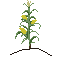
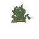

Tomatoes ("The Love Apple")
- According to botanists, tomatoes are a fruit! However, if you were to ask the culinary world, it would be a vegetable.
- Tomatoes originated from South America and the Aztecs once used them as a powerful hallucinogenic!
- There are over 10,000 types of tomatoes! (and not all of them are red)
- "10 Facts About Tomatoes" Campbell's Campbell Soup Company. 31 Mar 2021
Carrots ("Dweller on The Hill")
- Carrots were not always orange. They actually come in a variety of colors!
- It is one of the most economically important global crops.
- Carrots do not help you see in the dark. This myth was created during WW2 by the British to trick the Germans and hide the fact they developed effective radar technologies.
- "Carrot Facts for Kids." Food Facts Science Kids. 11 Apr 2020

Corn ("Tall Grass")
- In the 1800s, corn was a substitute for coffee when coffee beans were too expensive!
- Back in the day near Southern Mexico, corn started as a wild grass.
- Corn is an ingredient in fireworks!
- Buryk, Dee. "9 Facts You Might Not Know About Corn." Better Life Through Food Fresh City Farms. 26 Aug 2020

Potatoes ("Sweet Root")
- Potatoes can grow without soil, even in your cupboard!
- Potato chips were invented by mistake, when an annoyed chef cut potato slices super thin to appeal a picky customer in 1835 Saratoga, New York.
- Potatoes were the first vegetable grown in space!
- "10 Things You Probably Didn't Known About Potatoes" Food Republic Market Watch.